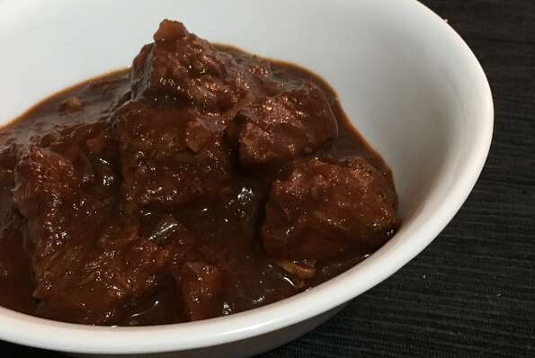

Gulasch

Description
Goulash is a popular meal in Central Europe, Scandinavia, and Southern Europe. This type of keto-friendly goulash you can find in any better pub. Can be served with dumplings, bread, or pasta.
Ingredients
- 3 tablespoons lard
- 2 white onions, minced
- 2 tablespoons paprika
- 1 pound beef stew meat
- salt to taste
- ground black pepper to taste
- 6 ounce can tomato paste
- 7 ounces water
- 4 cloves garlic, crushed
- 1 teaspoon ground cumin
- 1 tablespoon dried marjoram
Steps
- Melt lard in a pot over high heat. Add onions; cook and stir until browned, about 15 minutes. Remove pot from heat, add paprika, and stir quickly to combine with onions and prevent burning.
- Add meat to the pot and place over high heat. Cook and stir until browned on all sides, 5 to 10 minutes. Season with salt and pepper. Add tomato paste and stir to combine. Add water, garlic, and cumin. Reduce heat to low and cover the pot. Cook, stirring occasionally, until meat is very soft, at least 1 1/2 hours. Stir in marjoram and cook another 10 minutes.